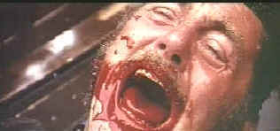

| Jaws
(SE)/A,B+ |
| Universal/1975/125/ANA
2.35 |
Timed
to perfection with hot beach days ahead, Universal is delivering
the special edition of Jaws in it's July wave of DVDs. Steven
Spielberg's delectable entertainment clearly stands the
test of time. The director successfully walks the balance beam
between heart-pounding tension and overblown theatrics. Jaws
seems to get better with every viewing, preening on its own elemental
simple beauty.
 |
| Robert
Shaw gurgles his way through an outtake. ©Universal |
For those of
you who have never ventured to the sands of Amity Island
for this terrific thriller, Jaws relates the events
surrounding a New England beach community when a great white
shark comes a visiting just in time to put a cramp in July 4th
celebrations. It's up to the chief of police Martin Brody, a New
York cop hoping for a calmer life at the beach, young hot
shot expert from the local Marine station Matt Hooper, and salty
veteran of the shark wars Quint, to catch the hungry predator
and save Amity's summer season. Battling the shark for newly
found favorite territorial feeding place is not your typical
game fishing foray.
Jaws has so
many things going for it. Spielberg really puts the pieces
together with great confidence. The editing is flawlessly timed.
The film moves at a splendid pace, maintaining tension, without
undue hyped embellishment. The John Williams score is
masterfully simple, raising the recurring Jaws theme with varied
tempos. Bill Butler's polished and assured photography gives
director Spielberg every shot his heart desires. Even the
mechanical shark cooperates for a few bold takes.
.
Watching the work of actors Scheider, Dreyfuss and Shaw suggests
their pleasure in this play act. There's terrific
communication between them as they muster all their courage to
battle the shark. Scheider brings a tired gravity to the role of
Chief Brody. He's the guy pulled in to a nightmare beyond his
wildest imagination. Dreyfuss's fresh-faced college boy demeanor
is perfect for Hooper. But it is Shaw that pulls them together
with a humorous ferocity. His Quint is the just the guy to stand
up to this big shark, though he may get more than he bargained
for. Oh yes, and don't forget to catch author Benchley playing a
TV reporter on the scene at Amity. You can almost believe he
knows what he's saying.
All the elements add up to an intense two hours that pass by
like thirty racing minutes Caution should
be exercised before allowing the impressionable to partake of
this powerful dip in the water.
The Making of Jaws, the accompanying Spotlight on Location
documentary, runs about one hour. The footage has been edited
from the original documentary made for the laser disc special
edition of several years ago, pared down from the original two
hour running time. A couple of out-takes and a generous sampling
of deleted scenes are presented separately. The documentary
moves almost as fast as the film itself. Commentary by the
principals is generous. Steven Spielberg recalls that his
favorite scene is the tale of the sinking of the Indianapolis.
Originally scripted by Howard Sackler, then re-done by
Spielberg, the final speech was re-written by Robert Shaw. The
scene is also my favorite in Jaws. Other interesting tidbits
include Spielberg's first two choices for the role of Quint, Lee
Marvin and Sterling Hayden, neither of whom were available. Shaw
was suggested by Brown and Zanuck, having worked with them in
The Sting. The documentary shares a great deal of the
challenge of making this film, from the innovative camera work
by Bill Butler to the daunting task of tooling a convincing amnitronic
shark. Along with director Spielberg, producers David Brown and
Richard Zanuck, screenwriters Carl Gottleib and Peter Benchley, actors Richard
Dreyfuss and Roy Scheider and composer John Williams, share
their memories of making Jaws.
The transfer elements are rock solid resulting in a consistently
crisp picture. You can delight to the sparkle in Shaw's eyes as
he enjoys the chasing his fate or remembering the past or even
discern the startled eyes in the shark cage don't look too much
like those of Richard Dreyfuss. The bleached out look of the
beach scenes works very well in this DVD presentation. Colors
still manage to stand out vibrantly under the hot sun. Presented
in Dolby Digital 5:1 surround (Also available in a DTS version
with the same packaging.), the score fares best. It moves in and
out in sense of depth, echoing the movement of a shark through
the water. Surround information is not very aggressive, though I
recall one dramatic front to back pan that almost made me duck.
|
|

Selections from the feature archive
include articles on
Akira Kurosawa, Frank
Darabont, Blonde
Bimbos, Hollywood
Street Gangs, or Vietnam:
The Hollywood Pariah, and many more....
The
Exquisite Muse of Zhang Yimou

The powerful image-making of Zhang
Yimou has revealed itself in virtually every film he has made. Coupled
with his remarkable collaboration with actress Gong Li, Zhang's has
built a stunning body of work Click the image to read all about
it.

The
Movie Poster Archive include extensive poster images from the
films of stars like Susan Hayward, Kirk Douglas, Katharine
Hepburn and many more. This month's featured star is
James
Mason

 Frank
Darabont is the cover interview in the current online issue of
Fade-In Magazine. Check it out along with other savvy features of
this excellent book Frank
Darabont is the cover interview in the current online issue of
Fade-In Magazine. Check it out along with other savvy features of
this excellent book

Doug Pratt's been doing almost longer than anyone in the business,
reviewing laser discs, that is, and now DVDs too. The venerable
Laserdisc Newsletter has been publishing since 1984. Pratt probably
has a large enough stock of laser discs in his house to build a
DVD-proof bomb shelter. Check out his on-line reviews at DVDlaser.com.
Avid-Collector
Posters

Great selection of big foreign
paper, plus the home of J. Fields linen service.

A great place for movie lovers and
techies to visit for exchange of ideas. New speedy interface is an
inspiration for more dialogue.
 Kinoeye
Archive Kinoeye
Archive
This
is a resource of all content-rich
materials on the web relating to Central
and East European cinema. The ultimate
aim of the Kinoeye Archive is to provide
a near-as-damn-it definitive index of
intelligent and thoughtful
English-language analysis of Central and
Eastern European cinema on the web.
 Direct
from the corridors of the Home
Theater Forum, Home Theater Talk is
the newest place on the Net to
discuss everything home theater.
Friendly atmosphere and
knowledgeable folks are the secret
ingredients. Direct
from the corridors of the Home
Theater Forum, Home Theater Talk is
the newest place on the Net to
discuss everything home theater.
Friendly atmosphere and
knowledgeable folks are the secret
ingredients.
|